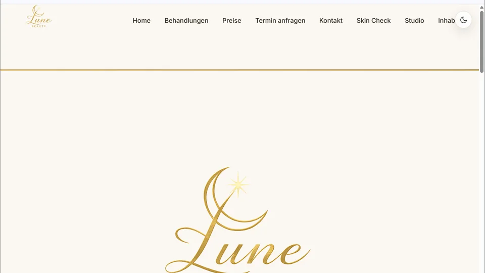
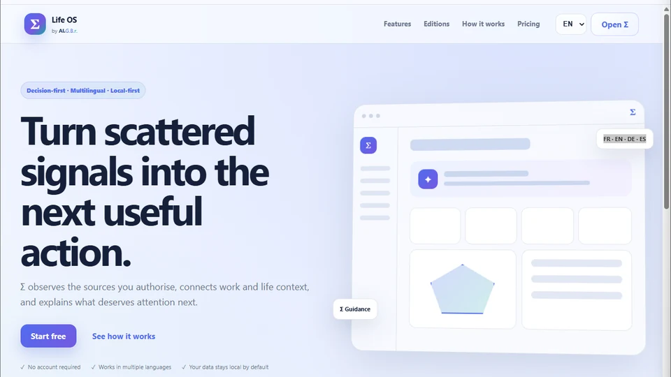
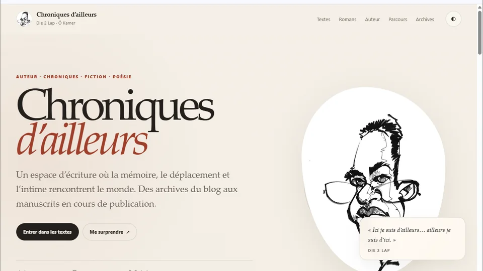
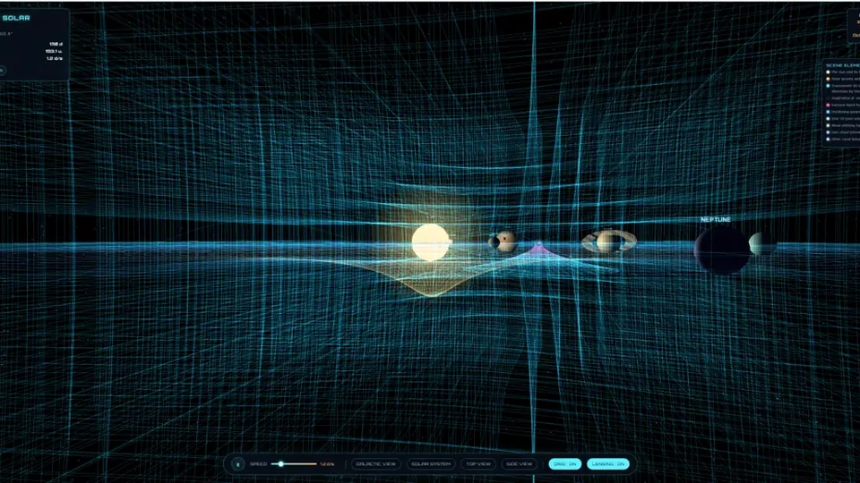

P&L responsibility
Revenue, gross margin, pricing, budgeting, forecasting and strategic planning.
International business and sensor-technology executive with 19+ years of experience across sensing, precision measurement, industrial automation and engineered B2B solutions.
A career built around commercial accountability, international teams and converting market insight into measurable business outcomes.
Revenue, gross margin, pricing, budgeting, forecasting and strategic planning.
International commercial leadership across sensor and measurement technologies.
Strategic responsibility across six industrial verticals and global growth priorities.
Improved sales conversion in global business development, alongside 15% revenue growth.
Three examples of translating market, technology and organizational complexity into structured execution and measurable outcomes.
Create a global industry-management model across six industrial verticals and an international matrix organization.
Built the function from concept to operational implementation, establishing governance, leadership structures, KPIs and a scalable operating model.
€150M+ commercial portfolio, six verticals and 60+ contributors across the international organization.
Restructure the international organization, transfer key operations from the UK to Germany without business losses, and establish a global Business Development capability.
Reorganized the UK team, established a new European team and built a global Business Development organization while strengthening commercial governance during the COVID crisis.
Led the operational transfer from the UK to Germany, introduced Salesforce CRM and safeguarded customer continuity and business performance throughout the transition.
Structure global Business Development for the torque portfolio and build a sustainable growth and diversification strategy around automotive-industry exposure.
Expanded the global torque business across marine propulsion, motorsport/KERS, renewable energy and advanced drivetrain applications. Identified the opportunity and initiated the HBM T3X torque-transducer platform, translating OEM needs into a business case and commercialization strategy.
Delivered 15% revenue growth, expanded the customer base by 10% and improved sales conversion from 9% to 55%.
Progressive responsibility across product, sales, business development, P&L, organizational transformation and global industry strategy.
Global strategic responsibility across six industrial verticals and a €150M+ commercial portfolio. Built Global Industry Management from concept to operational implementation, establishing governance, KPIs and a scalable international operating model.
€80M+ P&L and €100M+ international commercial responsibility. Led sensor business and EMEA commercial organization, strengthened commercial governance and restructured the international organization while protecting customer continuity.
Global responsibility for a €15M portfolio across automotive, marine & offshore, energy, aerospace and industrial markets. Initiated the HBM T3X torque-transducer platform and delivered 15% revenue growth, 10% customer-base expansion and a conversion increase from 9% to 55%.
End-to-end commercial and product responsibility for torque, force and displacement sensors. Grew torque-transducer revenue from €0.7M to €3.0M and displacement-sensor revenue from €0.4M to €1.5M.
Particularly experienced where technically complex portfolios need sharper priorities, stronger customer relevance and scalable commercial discipline.
International organizations, key accounts, pipeline and forecasting governance.
Revenue, margin, pricing, budgeting and resource allocation.
Design-in opportunities, business cases, product priorities and commercialization.
Market priorities, investment choices, customer value and competitive positioning.
Governance, operating models, leadership structures and cross-functional alignment.
Sensors, measurement, automation and engineered solutions across multiple industrial verticals.
Executive Education · Management & Leadership
Executive Leadership · Leadership Principles · Leading High-Performing OrganizationsUniversity of Applied Sciences Kaiserslautern
Sales & Marketing Management · International & Intercultural ManagementUniversity of Applied Sciences Karlsruhe
Electrical Engineering · Sensors · Instrumentation · Measurement TechnologyThese projects sit outside the core executive profile, but reflect the same ability to build from zero, combine technology with business needs and turn ideas into working systems.

LIVE · LUNE BEAUTYCo-founded and built the business from the ground up, personally creating the website, CRM, brand identity and go-to-market assets while also driving customer acquisition and partnerships.

PRODUCT · Σ LIFE OSDesigned and operate a private local AI environment while building practical digital products such as LifeOS, Web Intelligence and marketplace-connectivity tools.

LITERARY · SINCE 2014An independent writing practice spanning travel writing, short fiction, poetry and long-form fiction, sustained alongside an international executive career.

EXPLAIN + SIMULATE · 3DA two-part science experience that first explains the model, then lets visitors explore it. I designed and built the explanatory layer and interactive 3D simulation to make spacetime curvature, orbital motion and scale easier to understand.